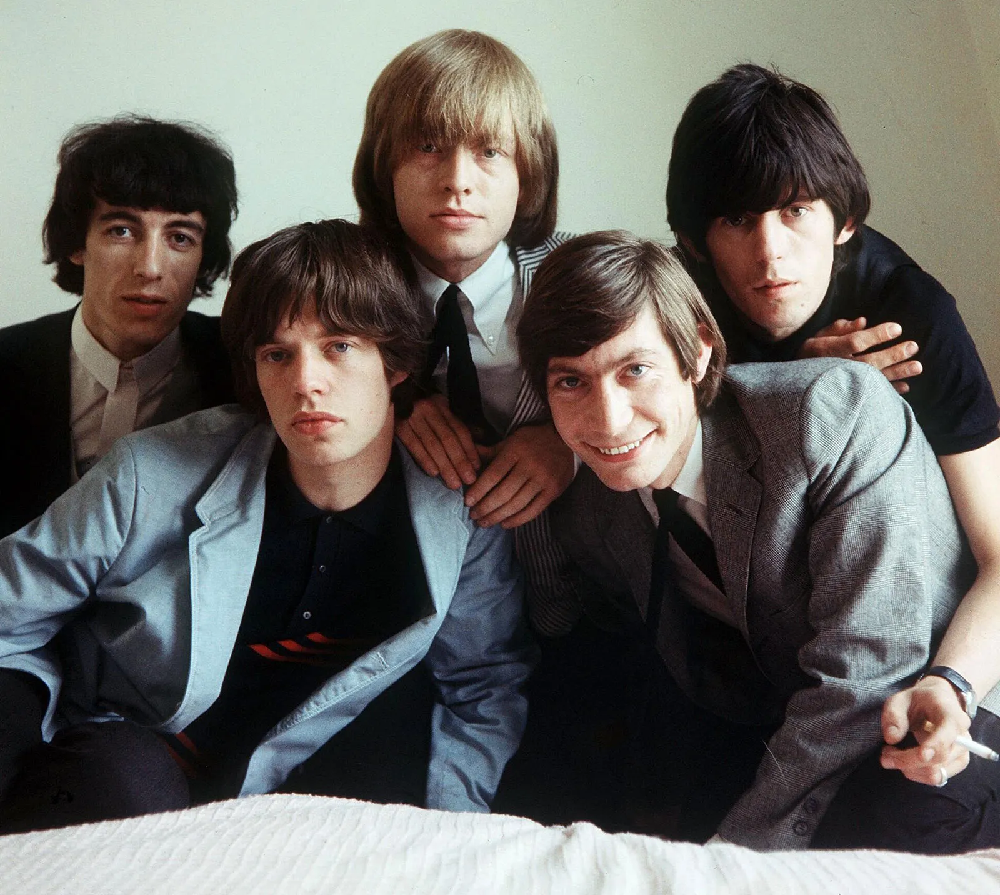
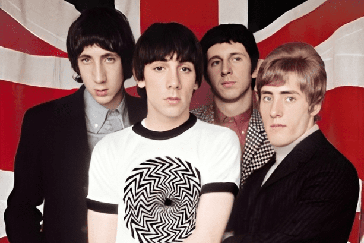
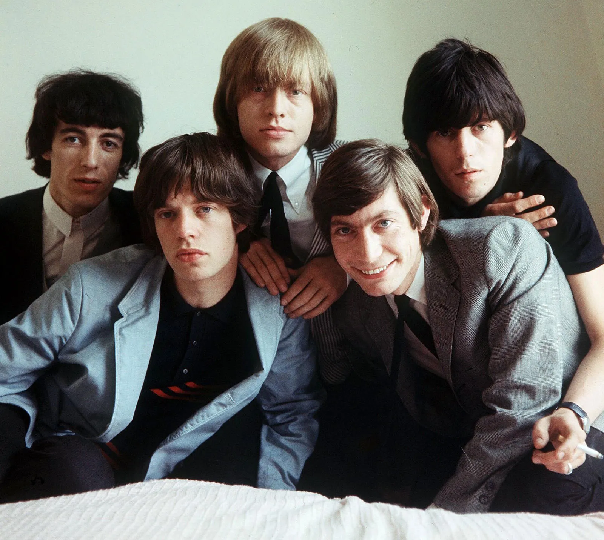
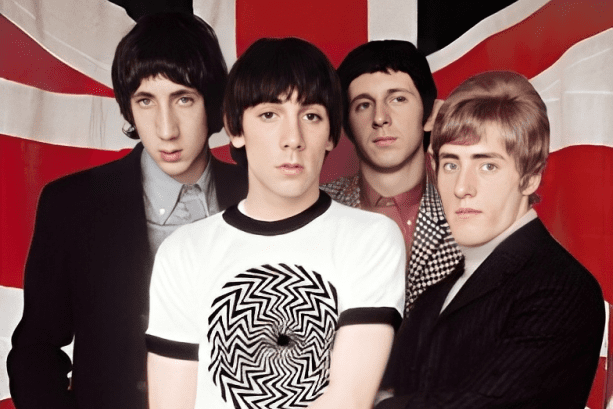

Rock music has a rich and diverse history that spans several decades and has left an indelible mark on the cultural landscape worldwide. From its humble beginnings in the 1950s to its evolution into numerous sub-genres and styles, rock music has continually pushed boundaries, challenged norms, and provided a voice for generations
The roots of rock music can be traced back to the 1950s when rhythm and blues, country, gospel, and other musical styles merged to create a new sound that would captivate audiences around the globe. Pioneering artists like Chuck Berry, Little Richard, and Elvis Presley introduced electrifying rhythms, soulful vocals, and rebellious attitudes, laying the foundation for what would become known as rock 'n' roll.


In the early 1960s, British bands such as The Beatles, The Rolling Stones, and The Who took the world by storm with their infectious melodies, innovative songwriting, and charismatic performances. This period, often referred to as the British Invasion, not only revolutionized the music industry but also solidified rock music's place as a cultural force to be reckoned with.
  
 
As the 1960s progressed, rock music underwent a psychedelic revolution, fueled by experimentation with drugs, spirituality, and avant-garde aesthetics. Bands like The Jimi Hendrix Experience, Pink Floyd, and Jefferson Airplane pushed the boundaries of sound and consciousness, creating immersive sonic landscapes that reflected the countercultural ethos of the era.


The 1970s saw the rise of classic rock bands such as Led Zeppelin, Queen, and AC/DC, who crafted anthemic songs that filled stadiums and defined a generation. With their powerful riffs, soaring vocals, and larger-than-life personas, these bands epitomized the spirit of rock 'n' roll and cemented its status as a global phenomenon.


In the late 1970s and 1980s, punk rock emerged as a raw and rebellious response to the mainstream music scene, with bands like The Ramones, The Sex Pistols, and The Clash leading the charge. This DIY ethos would later influence the rise of alternative rock and new wave bands such as Nirvana, The Cure, and R.E.M., who brought a new level of introspection and experimentation to the genre.